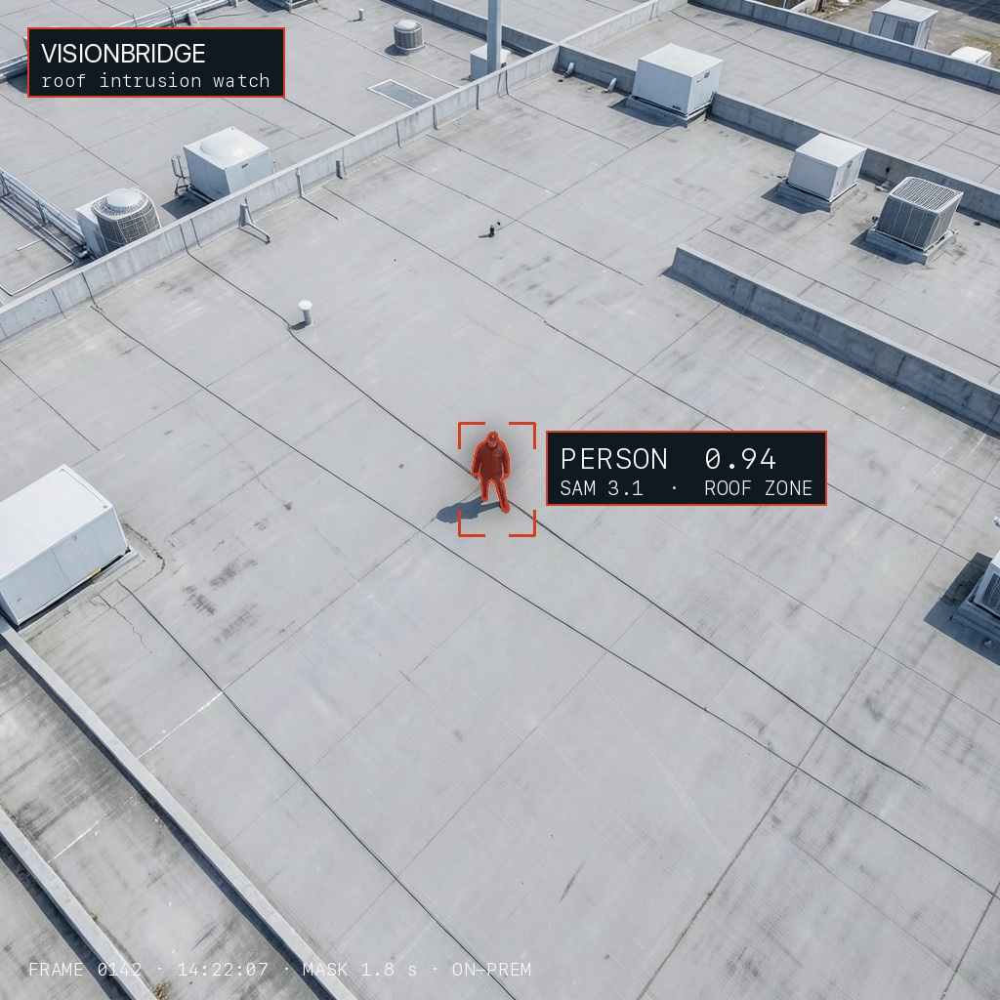
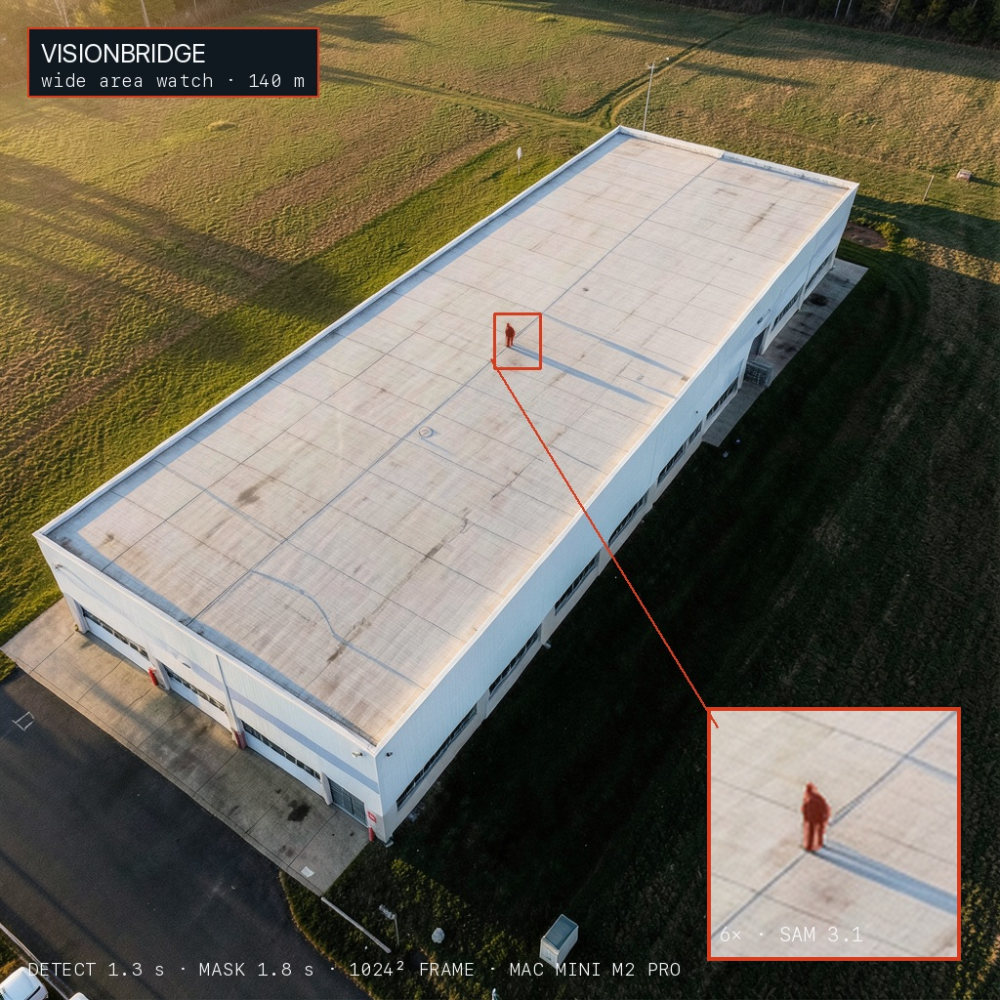
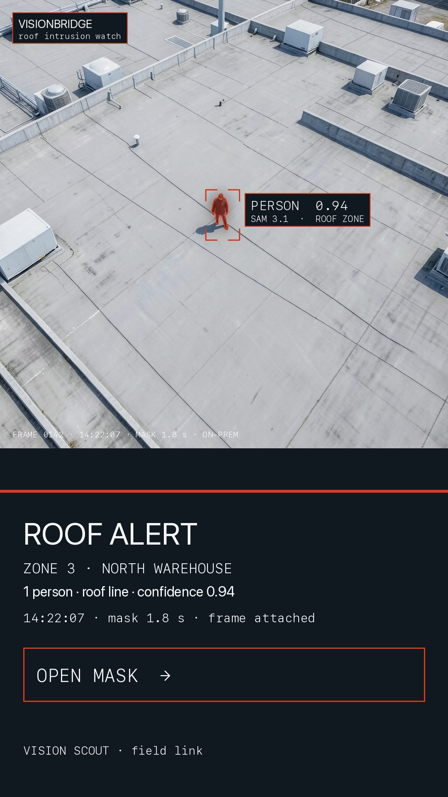

A roof is a blind spot.
VisionBridge turns the cameras, CCTV networks and drones you already run into one persistent watch over roofs, walls and perimeters — and puts a masked frame of anything that shouldn't be there on your field team's phones in about three seconds.
It runs on hardware you choose: a machine on site, a virtual machine, a cloud instance, or a mobile unit that drives to the job. Nothing has to leave your building, and none of your cameras get replaced.

measured on this machine
supported in the architecture
What the system actually does
Inputs come in from wherever you already have eyes. One reasoning core asks the narrow question, draws the answer, and merges what every view is telling it. The result goes to the people who can walk over and look.
- 01
Watch the zone
Your existing cameras, a handful of cheap ones, or a drone overhead. Rooflines, walls, gates, the outside face of the perimeter — the places a person can be and nobody can see.
- 02
Ask one narrow question
A small vision model watches for one thing: a person where a person shouldn't be. Narrow questions are fast — about 1.3 seconds on a low-resolution frame.
- 03
Draw the shape
A second model outlines exactly what it found and labels it with a confidence. The field team sees a person, not a blinking dot on a map.
- 04
Push it out
The annotated frame arrives on the phones of the people already standing on the ground. They walk over and look. That is the whole loop.
It starts from what you already run
VisionBridge is not a camera. It sits in front of the camera estate you already have and makes it do something it cannot do on its own: reason about what it is looking at, continuously, and say so out loud.
Existing CCTV networks. We read the stream from your NVR or VMS. No rip-and-replace, no new cabling, no change to how your operators already work. Analogue, IP, whatever is already terminated.
Camera on any surface or feature. A pole, a parapet, a gatepost, a wall, a parapet corner. If it streams video and it covers a surface, it can be a zone.
Drone feeds. A single aircraft on a slow orbit, or a fleet. Video comes down to the same core and lands in the same alert stream as the fixed cameras — one queue, one picture.
Mixing sources is the point. A fixed camera knows one angle forever; a drone knows many angles for a while. The core does not care which is which — it cares whether a person is standing somewhere they should not be.
Many eyes, one picture
A single camera has a cone. A building has four sides, a roof, and a perimeter. That is where fleets change the arithmetic: several aircraft covering overlapping ground, and — this is the useful part — sharing what each one has detected and what it has reasoned about.
When one aircraft has a person in frame and another is turning away, the second does not start from nothing. The detection, its shape and its confidence hand over, so a person who walks out of one field and into another does not fall into a gap between them. Coverage becomes continuous over the area rather than per-camera.
The same sharing works sideways. Two fixed cameras with overlapping views, or a fixed camera and a drone passing over it, reconcile into a single tracked picture instead of two unrelated alerts on two screens.
Where it runs
The same core, on whichever footing you already have — or on one you can carry to the site. There is no single blessed deployment, and nothing about the product forces your video into somebody else's data centre.
All four run the same pipeline and produce the same alert format. On-site and mobile keep every frame inside your perimeter by construction; virtual machine and cloud are for sites that would rather inherit existing patching, backups and access control than run another box.
Not only roofs
The question the model asks is deliberately narrow — is there a person where a person shouldn't be? — but the surfaces it can ask that question about are not. A roof is simply the first one, because it is the one nobody watches.
And it is not restricted to people. The model's frame of reference is the scene as it should be, so the same machinery carries anomalies that a fixed rule cannot describe: a door standing open that is always shut, a service hatch lifted, an object left on a surface that is always clear, or movement across a wall that should be perfectly still.
The honest boundary: this is a watch on surfaces and objects, not a product for identifying people. It does not recognise faces and it does not build a picture of a person's identity. It tells your team that something is where nothing should be, and shows them the frame.
Measured, not claimed
Every number on this page was measured on the machine that runs it — a 32 GB Apple M2 Pro, on a 1024-pixel frame, using SAM 3.1 (bf16) and Falcon Perception 3B, both running locally through MLX. Warm figures are per-frame throughput with models resident; cold figures include model load and are only paid once per session.
| stage | what it produces | cold | warm |
|---|---|---|---|
| tripwire detect | is a person present — low-res frame | 1.6–8.0 s | 1.3 s |
| full detect | boxes at full resolution | 4.3–9.7 s | 3.9 s |
| SAM 3.1 detect | boxes, high confidence | 1.8–11.3 s | 1.8 s |
| SAM 3.1 segment | pixel mask of the person | 1.8 s | 1.8 s |
| Falcon segment | mask via the 3B grounding model | 10.1–34.9 s | 9.8–11.0 s |
Method: warm = second and later passes with the model resident; a 1 fps sampler therefore reaches first alert in under three seconds from a person arriving on a surface. Masks exported as pixel-accurate overlays, not boxes.

What the numbers above cover
- Single-frame detection and segmentation latency, cold and warm, on one 32 GB M2 Pro.
- First-alert time of under three seconds at a 1 fps sampling rate.
- Pixel-accurate masks, exported from real model output — the frames shown on this page.
What is a deployment choice, not a benchmark
- Reading existing CCTV, fixed cameras and drone feeds into the same core and alert stream.
- Running on an on-site machine, a virtual machine, a cloud instance or a mobile unit.
- Multiple aircraft sharing detections and reasoning to hold coverage across an area.
- Surfaces beyond the roof: walls, perimeters, building faces, and scene anomalies.
Why roofs
Butler, Pennsylvania — 13 July 2024
On 13 July 2024, a shooter climbed onto the roof of the AGR International complex near the Butler Farm Show grounds and fired at a former president from a position roughly 400–450 feet from the stage. The public record of how that happened is a list of things a persistent, boring camera could have made visible.
- The building housed three police counter-snipers assigned to cover the event. None of them were on the roof, because of a staffing shortage.
- The slant of that roof may have hidden the shooter from Secret Service snipers; a tree line blocked the northern team's view.
- Bystanders saw a man on the roof and reported him to police minutes before the shots.
- The independent reviews that followed called it the agency's most significant security failure since 1981.
None of those failures were caused by a lack of people or a lack of cameras. They were caused by a roof that nobody could see continuously, and by a report that had to travel by radio through a chain of people.
VisionBridge is not a replacement for a counter-sniper team or a radio net. It is the cheap, tireless layer underneath them: it looks at the same surfaces, every second, and the moment a shape appears on one, the picture is already on the phones of the people who can walk over and check.
Sources: public reporting on the 13 July 2024 shooting, incl. the Senate Homeland Security & Governmental Affairs review and contemporaneous investigative reporting. Facts stated as reported; figures in the table above measured on our own hardware, 15 Sept 2026.
What the field team gets
- An alert with the frame attached — the actual image, already masked, with confidence and the zone name.
- No login ceremony. The alert goes to phones that are already on site, on your own link.
- One tap opens the mask and the zone view, so the responder can see the angle before they walk.
- Every alert is logged with a timestamp and the frame, so the day can be replayed afterwards.
- When several feeds cover the same ground, they reconcile into one alert rather than three.

What it takes to stand it up
- inputs
- Existing CCTV and VMS streams, fixed cameras on any surface, and drone video. We read the stream; we don't replace it. Mixed sources land in one alert queue.
- compute
- One of four: an on-site machine (an Apple Silicon box or a small edge unit), a virtual machine on hardware you already run, a cloud instance in a region you choose, or a mobile unit that comes to the site. Same pipeline, same output.
- aircraft
- One drone is useful for a moving view. A fleet is useful for area coverage: overlapping fields, with detections and reasoning shared between aircraft so a person moving across the site never leaves the watch.
- network
- On-site and mobile deployments need nothing to leave the building — inference runs where the cameras are. Virtual machine and cloud deployments use an encrypted link you control.
- setup
- Streams pointed at the surfaces you care about, a zone drawn around each, the field phones added to the alert list. That is the whole configuration.
- what it is not
- Not a weapons system, not face recognition, and not a replacement for your security plan or your radio net. It is a persistent watch on the surfaces of your site that people cannot watch continuously — and it tells your team when something is on one.
Pilot it on one site.
We're taking a small number of pilot sites — a surface, the cameras or aircraft you already have, and a few field phones. If it misses anything that matters, you tell us and we fix it. If it works, you'll have the only perimeter layer on the market that runs on hardware you already own.
Request a pilot site